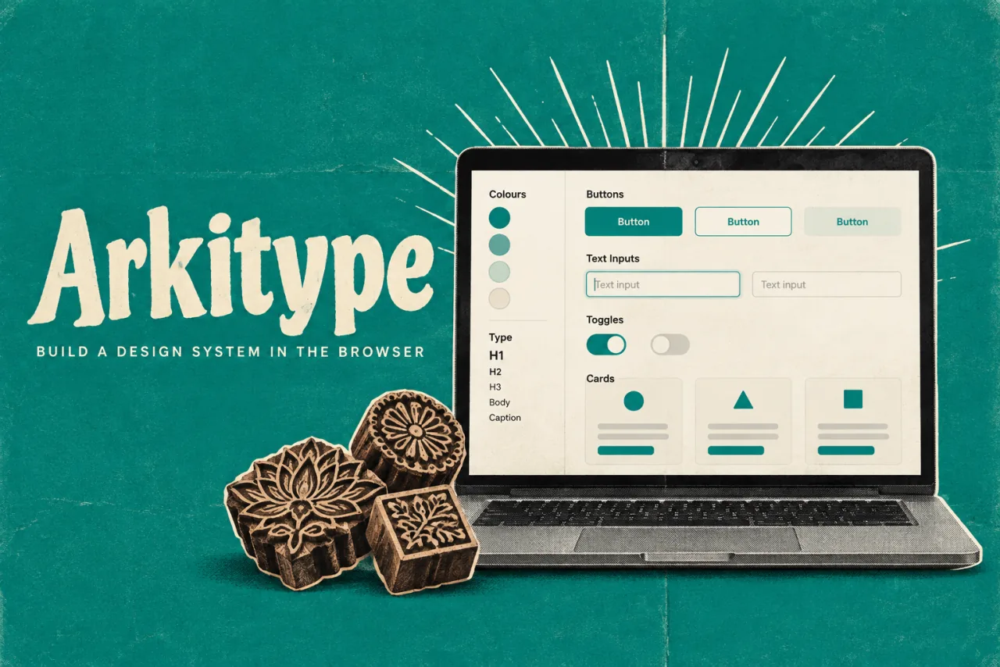

ArkitypeProduct story · 5 min read
Change a token. See what it changes.
A working design-system studio that links foundations, component behaviour, previews, and exports through one model.
Read the case study

Foundations in context: the palette, navigation and contrast inspector share one workspace.
View full size ↗01 The problem
What if the different outputs all came from the same decision?
A palette, a component library, and a handoff document can each look convincing while disagreeing with one another. I approached Arkitype as a connected workspace: decisions about colour, type, space, shape, and motion should remain visible in the components and artifacts they produce.
Designed for Designer shaping a shared system. Understand how one decision affects the rest of the system.
User context Design assumption
Revisiting foundations and component decisions during an evolving project.
- The friction
- Disconnected screens and handoff artifacts can drift.
- Design implication
- Show relationships, states, and consequences together.
Example situation · illustrative scenario. Imagine changing a brand colour and then checking every place it appears: components, documentation, previews, and the handoff. The change is small; keeping all its consequences aligned is the real work.
02 The direction
Relationships over inventory
A system needs relationships between decisions, not just an inventory of components. Arkitype’s shared model connects foundations to the things a team can inspect and use.
Product artifact · shared model
My direction. I organised the workspace around dependencies, letting designers revisit decisions while keeping their consequences visible.
Process and product scope
I framed the workspace around eight connected design areas, rather than a compulsory wizard. A designer should be able to revisit a foundation while considering a component and still understand what depends on that decision.
The UX goal is continuity: foundations, component states, previews, and handoff should feel like parts of one system. The current 90-component library is product scope; it does not establish that a new user understands the workspace.
- 90
- components in the system registry
- 8
- decision areas
- Shared
- token-to-export model
- Define
Set colour, type, space, shape, and motion.
- Bind
Connect component behaviour to system tokens.
- Inspect
See the decisions in a real preview.
- Ship
Generate artifacts from the same model.
03 The outcome
One system, visible in several places.
I shaped Arkitype around the relationship between foundations, component states, previews and handoff. The beta brings those surfaces into one workspace, with a documented library of 90 components. The design question I still want to test is whether a new user can follow a change through the whole system.
More about the experience
- Navigate the system. Foundations and components remain within reach.
- See the consequence. Editable palettes stay beside the result.
- Inspect the decision. Contrast information sits in the same workspace.
04 Design decisions
Keep design changes connected.
Open a decision to see the reasoning and trade-off.
01Use dependencies to guide, rather than enforce a sequence
Foundations, assets, components, and preview remain accessible, with relationships expressed as Built from and Lands in links.
Why this matters. The navigation reflects iterative design work instead of pretending every system starts and ends in the same order.
The trade-off. An open workspace gives less automatic direction. First-use guidance must help a person find a useful starting point.
02Keep design changes consistent across surfaces
The preview, component workspace, and handoff reflect the same design decisions.
Why this matters. A change should carry through to the places a team actually uses, rather than depend on repeated manual updates.
The trade-off. A designer needs to know which properties carry through and which need review before handoff.
03Let people inspect appearance and behaviour
The studio distinguishes controlled component specimens from interactive previews.
Why this matters. A design system needs comparable states and realistic behaviour. One view cannot do both equally well.
The trade-off. Interactive examples add state and complexity; the underlying specimen must remain predictable for documentation and export.
05 Reflection
System quality lives in what stays connected when something changes.
I would ask a designer to change a foundation, find the affected component states and prepare a handoff. If they need a second explanation at every step, the workspace is still making them carry too much of the system in their head.
What I would evaluate next proposed work
- ask a designer to start from one brand colour, adjust a component, and produce a usable handoff. Record confusion, corrections, and output mismatches.
- time to the first coherent system and the number of inconsistencies discovered after export, with a defined task and baseline.
Room to sketch before committing to a design.